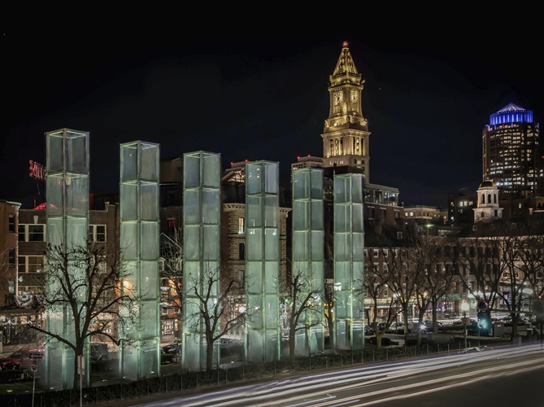
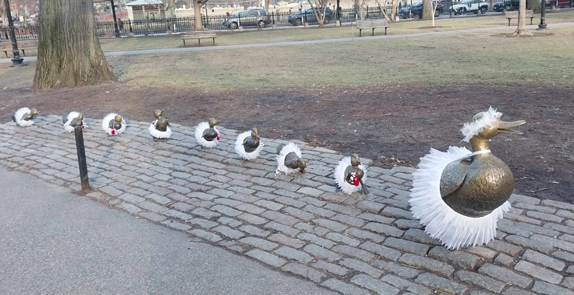
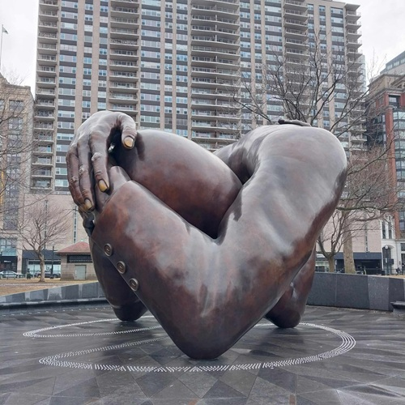

Here are the top 5 things I loved most about my visit to Boston last winter!
Index
The Historic Architecture & Creative Energy
Boston is a city that seamlessly blends its rich history with a vibrant creative energy. The historic architecture, from the iconic brownstones to the stunning churches, tells the story of a city that has witnessed centuries of change. Walking through the streets, you can feel the pulse of creativity in the air, with art galleries, theaters, and street performers adding to the city's dynamic atmosphere.
Quincy Market & the Food Scene
Quincy Market is a food lover's paradise, offering a diverse array of culinary delights. From fresh seafood to international cuisine, the market is a feast for the senses. The lively atmosphere, with street performers and local vendors, makes it a must-visit destination for anyone looking to experience Boston's vibrant food scene. At Quincy Market, I gorged on creamy clam chowder, buttery lobster rolls, and the infamous Boston cream "pie" (which, let's be real, is a cake wearing a fancy name).
Street Art & Powerful Monuments
Boston is a city that celebrates its history through powerful monuments and street art. Beyond the Freedom Trail's history, Boston's public art tells its own stories:
- The New England Holocaust Memorial (glass towers etched with camp numbers).
 - The playful Make Way for Ducklings statues (a childhood classic come to life).
 - The Embrace Memorial in Boston Common, honoring MLK and Coretta Scott King's legacy.

The Freedom Trail's Revolutionary Spirit
The Freedom Trail is a 2.5-mile-long path that takes you through Boston's most historic sites. From the Boston Common to the USS Constitution, the trail is a journey through the city's revolutionary past. Walking the trail, you can feel the spirit of the American Revolution and the fight for freedom that shaped the nation.
Unexpected Nerdy Pilgrimage: Boston in Pop Culture
Boston has been a backdrop for countless movies, TV shows, and videogames. The city's iconic locations have become synonymous with its culture. Visiting these sites is like stepping into a movie set, and it's a fun way to connect with the city's pop culture history.
As a gaming fan, I freaked out spotting these IRL locations:
- The Last of Us: City Hall Plaza (where Tess meets her end).
- Fallout 4: Fenway Park = Diamond City, and the USS Constitution mid-air.
- Assassin's Creed III: The Old North Church and Boston Massacre site are key missions.